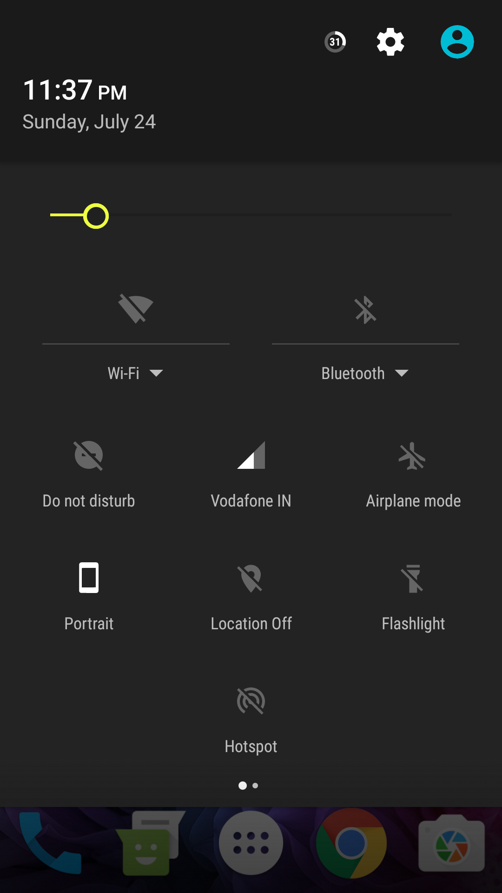
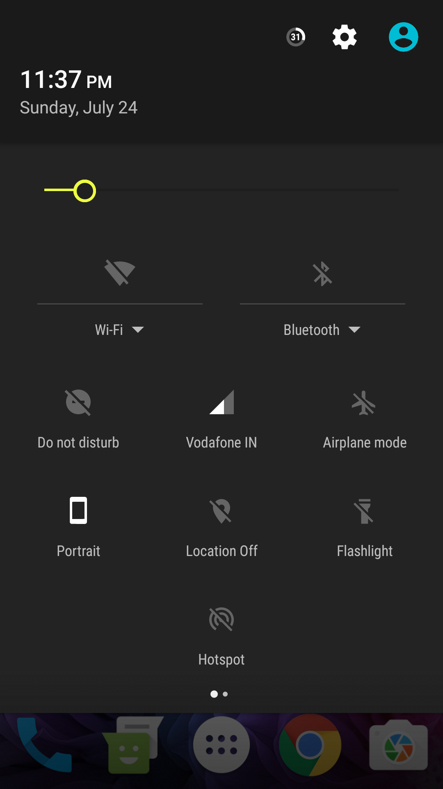

I like travelling, I've fell quite a few times though not once broke a bone. I like non-veg food specially chicken. I love music a lot. At age of 15, I came to know what I had to do in my life and I had finally found my passion. I play lot of mobile games and mess with softwares. I read many things on the Internet, and also follow various forums.
I grew up in a very small town (Hisua) of India. Its a remote area close to Rajgir region, in Bihar. Due to lack of resources i was not able to learn many things that i wanted to, in the initial years. Later on, with the arrival of INTERET OF THINGS, I got a chance to learn a few things and soon I knew my passion. Then I started digging articles on various websites and learned development. In 2012 I joined XDA and since then I've not stopped. I learned things about Android from the Internet and I'm also maintaining some projects.
OrionOS (Custom Android Firmware)
OrionOS is a custom firmware developmment project based on Android Open Source Project (AOSP).
Soham Jambhekar started this project to build a stable ROM for Motorola Moto G(2013) bundled with essential features
and sleek performance. It is currently available for many devices, maintained by a team. I myself am a part
of the team and currently maintain OnePlus X (onyx). Check it out on github or Google+.
Also check out our themes on Google Play Store.

 

This wesite (HTML and CSS based)
I started this website as my learning project when I started with web development, Slowly customizing it to evolve up to a professional level. Its my profile website and some details about me can be found here. Github tools are being used to manage and update it.